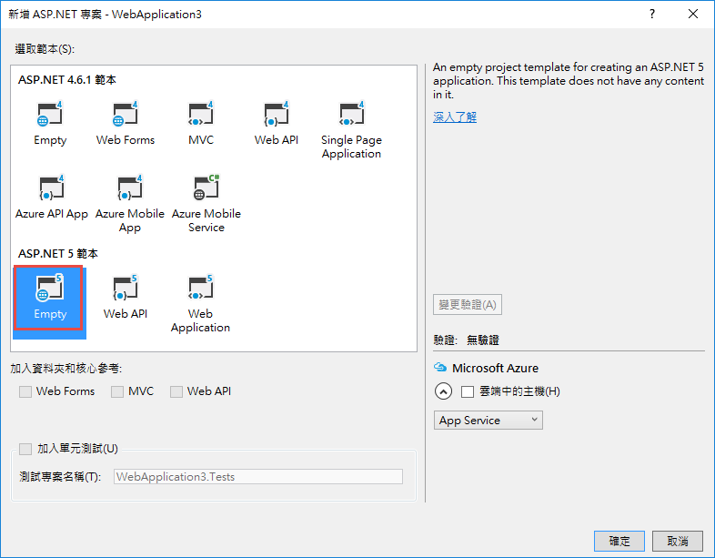
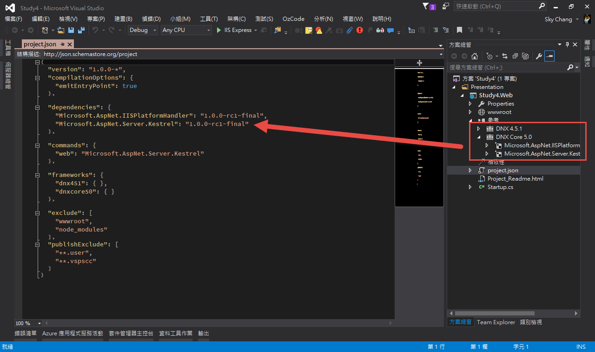
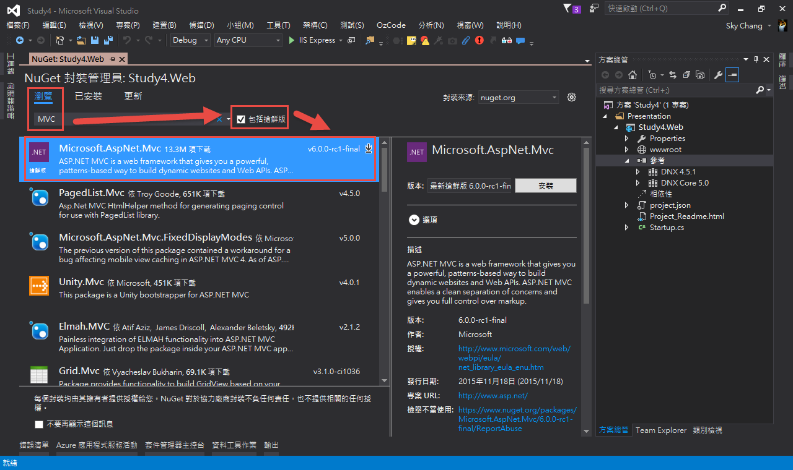
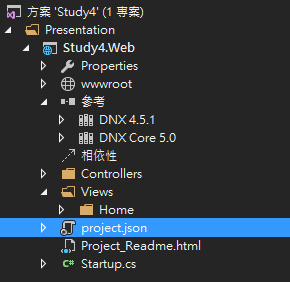
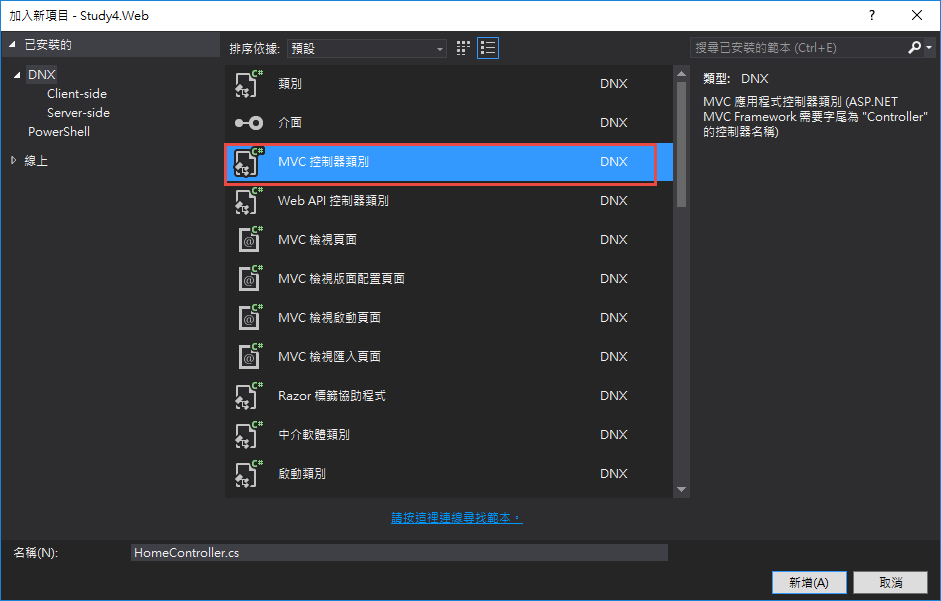
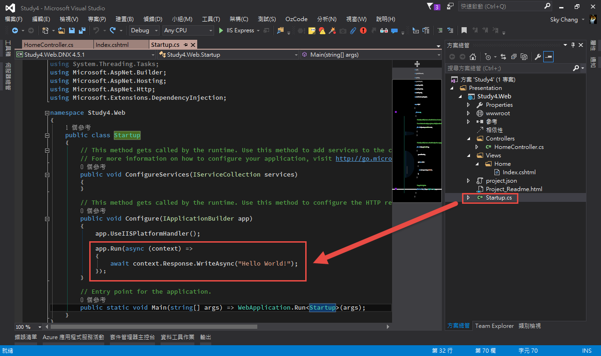
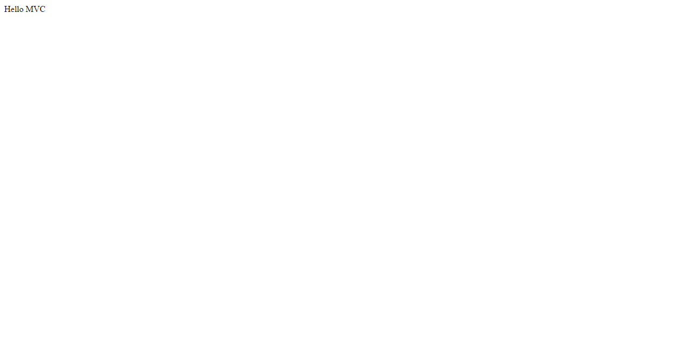

前言
小弟從 ASP.NET MVC 2 就開始摸索，時間飛逝，到現在，已經出到 ASP.NET MVC 6 了；記得當初 MVC 2 掀起了風風雨雨，有些人認為，ASP.NET Web Form 要被淘汰了，也有人認為，MVC 的開發速度太慢，沒有 Gird 這類的套件；而到了 MVC 3 ，最大的改變就是 Razor 了吧，強大的 Razor 改變了原本一堆括號的地獄；到了 MVC 4 開始，則進入了 Web API 時代，搭配 KO，還有 Mobile 的各種解決方案，也看到了 Mobile 時代的興起；而進入 MVC 5 後，大大的強化了 MVC 4 的功能，並且讓 Bootstrap 等解決方案進入到 MVC 5 預設的選項裡面，也看到了 MS 準備進入 Open Source 的改變；而 MVC 6 更是根本上的改頭換面，搭配全新的 .Net Core ，底層全部從寫，增加 DI ，甚至是未來的 AngularJS 2 ，更可以看到 MVC 6 完全和以前是不一樣的產品了。
而隨著目前 RC 的推出，我們除了在 OSX 底下進行開發外，我們也來看看，Windows 底下，如何使用 Visual Studio 2015 來撰寫第一個 Hello MVC 應用程式!!
( 不要覺得 Hello MVC 很虛阿!! Hello Application 可是所有應用程式的始祖 !!! 逃~ )
建立 Hello MVC Web Application
首先，我們依據我們熟悉的流程，來建立 ASP.NET 應用程式，而這邊我們選擇了，ASP.NET 5 的範本，並且選擇 Empty。
或許大家會覺得困惑，為什麼不選擇 Web Application 呢??
原因很簡單，因為小弟希望能了解從無到有，怎樣建立起一模一樣 ( 或是類似 ) 於 Web Application 範本，雖然選擇了 Web Application 後，裡面甚麼東西都有了，但卻不一定適合小弟我，所以我還是習慣從無到有的建立。

接下來，大家稍微等一下後，就可以發現，專案完成了。
而使用 Empty ，就真的很 Empty ，甚麼都沒有….但我們可以稍微看一下，其實 參考 是會對應到 project.json 的。
這點就和以前的設定非常不同，不過在 Node.js 裡面，用 json 當設定檔，也行之多年了。

另外，順便補充一下，目前 MVC 用的 .Net Framework 也有分完整版和跨平台專用的 .Net Core ( .Net 核心 )，我們可以從這裡簡單的切換。

接著，我們繼續往下，我們可以稍微喵一下上圖，會發現，嗯，甚麼都沒有…但既然我們要寫 MVC ，那就一定要有 MVC 的 Lib 阿!!!
所以我們就要叫出老伙伴，NuGet ，並且安裝 Microsoft.AspNet.MVC。
這邊要特別注意一下，因為 MVC 6 還在 RC，所以記得要勾選搶鮮版，不然會找不到。

安裝完後，我們就可以在 參考 裡面看到了。

完成後，我們就可以開始熟悉的事情。
首先，我們要自己手動新增 Controllers 和 Views 的目錄，也順便在 Views 的目錄下加上 Home 的目錄，( 詳細的 MVC 觀念，這邊就不解釋了。 )

接下來，我們在 Controlers 的目錄下，新增一個新的項目，並且選擇 MVC 控制器類別。

接著，到 Views 的目錄下，底下的 Home ，新增一個新的 View 。

並且在 View 裡面打一下 Html吧。
1 | @* |
完成後，大家可以 run 一下，就會發現，完全不會有任何動作 XDDDD
理由很簡單，我們可以到 Startup.cs 看到這一行，如下圖。
這代表著，當 app run 的時候，會輸出 “Hello World” ，所以畫面無論如何都不會出現 Hello MVC ，而是會出現 Hello World 阿!!!! ( 我們要的是 Hello MVC 阿!! )

所以為了讓 MVC 動作，我們必須要改一下 Startup.cs。
首先，我們要先在 ConfigureServices 裡面加上 service.AddMvc();
代表，我們要加上 MVC 這個服務。
接著，Configure 裡面，去設定 MVC 了。
我們在裡面設定了 MVC 的路由，而且現在的路由更好懂了。
1 | using System; |
完成之後，我們就可以在 Run 一次，( 不用 Build，未來開發 Web Application ， 都不用 Build 了 )，按下重整後，我們就可以看到我們期待的 Hello MVC 了!!
